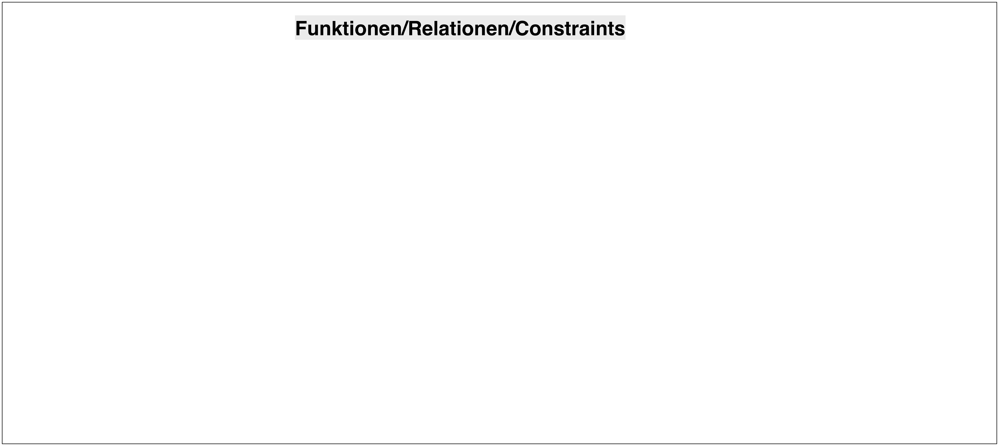
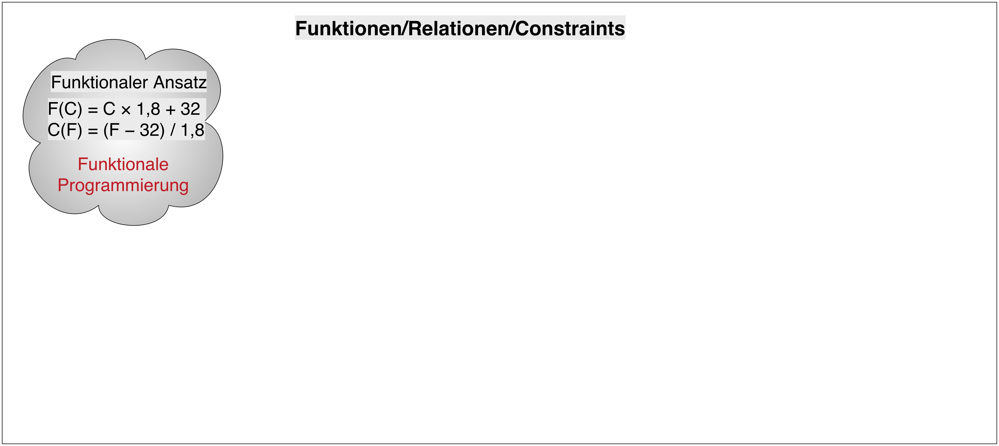
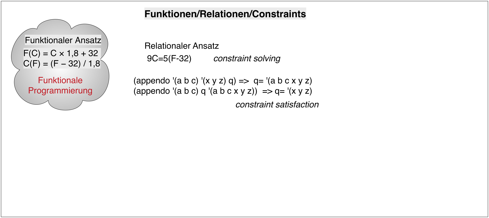
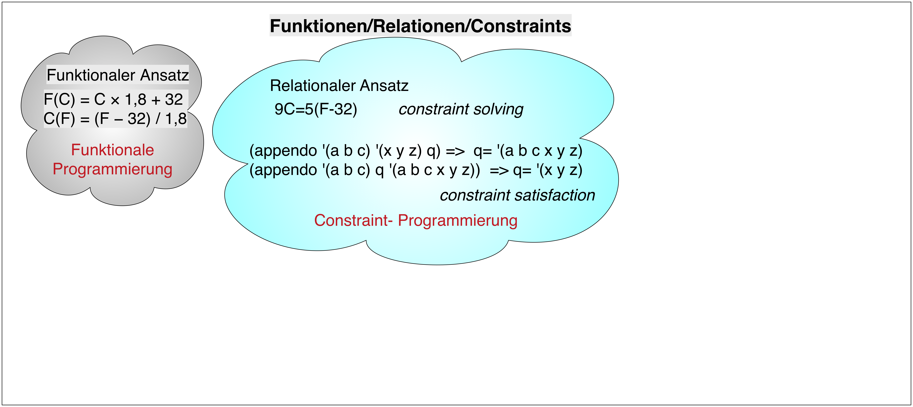

Relationale Programmierung: Übersicht
Johannes Brauer
Created: 2017-08-14 Mon 22:44
Von der funktionalen zur relationalen Programmierung
Übliche Klassifikation der Programmierparadigmen (vgl. auch 5. Semester)
| Imperative Programmierung | Deklarative Programmmierung | ||
|
Prozedurrale Programmierung |
Objektorientierte Programmierung |
Funktionale Programmierung |
Logische Programmierung |
Modifizierte Klassifikation
| Imperative Programmierung | Deklarative Programmmierung | ||
|
Prozedurrale Programmierung |
Objektorientierte Programmierung |
Funktionale Programmierung |
Relationale Programmierung |
- Es gibt eine akademische Diskussion über den Unterschied zwischen logischer und relationaler Programmierung.
- Gelegentlich wird die logische Programmierung (insbesondere im Kontext der Programmiersprache Prolog) als Erweiterung der relationalen Programmierung angesehen (vgl. dazu Kapitel über logische Programmierung).
- Hier wird der Begriff in Abgrenzung zur funktionalen Programmierung als eine Spielart der deklarativen Programmierung angesehen:
Spezifiziere das Problem und das System ermittelt das Ergebnis.
Überblick







Beispiel: Natürliche Zahlen
- Natürliche Zahlen können mithilfe der Peano-Axiome definiert werden:
- \(z\) ist eine natürliche Zahl (steht für die 0, zero).
- \(s(N)\) ist eine natürliche Zahl, wenn \(N\) eine natürliche Zahl ist.
Funktionale Implementierung
(vgl. auch Rekursive Definition der natürlichen Zahlen!)
;; z ist eine natürliche Zahl (steht für die 0, zero). (def z 'z) ;; + (s N) ist eine natürliche Zahl, wenn N eine natürliche Zahl ist. ;; s: Nat -> Nat (def s (fn [n] (list 's n))) (deftest test-s (is (= (s z) (s z))) (is (= (s (s z)) (s (s z)))))
Axiome für die Vorgängeroperation und die Addition
- Wir definieren zwei weitere Operationen zur
- Ermittlung des Vorgängers einer natürlichen Zahl: \(pred\)
- Addition von zwei natürlichen Zahlen: \(plus\)
- Die Definitionen nehmen wir dadurch vor, dass wir die
Wechselwirkungen der neuen Operationen mit den Basisoperationen \(z\)
und \(s(n)\) zunächst durch Gleichungen beschreiben.
- Für \(pred\) gelte (mit \(n\) als natürlicher Zahl): \[\begin{aligned} pred(s(n)) & = n & \\ pred(z) & \ \mathrm{ undefiniert} \end{aligned}\]
- Für \(plus\) gelte (mit \(n\) als natürlicher Zahl): \[\begin{aligned} plus(z, n) & = n \\ plus(s(n), m) & = s(plus(n, m)) \end{aligned}\]
Implementierung von plus
;; berechnet die Summe ihrer Argumente ;; plus: Nat Nat -> Nat (def plus (fn [n m] (cond (= n z) m :else (s (plus (pred n) m))))) (deftest test-plus (is (= (plus z (s z)) (s z))) (is (= (plus (s z) (s z)) (s (s z)))) (is (= (plus (s z) (plus (s z) (s z))) (s (s (s z))))))
Implementierung von pred
;; liefert den Term des Vorgaengers ihres Arguments ;; pred: Nat -> Nat (def pred (fn [n] (cond (= n z) (throw (Exception. "z hat keinen Vorgaenger")) :else (first (rest n))))) (deftest test-pred (is (= (pred (s z)) z)) (is (= (pred (s (s z))) (s z))) (is (thrown? Exception (pred z))))
Logische Implementierung
Natürliche Zahlen werden durch das folgende Prädikat, bestehend aus zwei Termen, definiert:
natural(z). natural(s(N)):- natural(N).
- Die Prüfung auf „null” und „größer als null” geschieht hier
automatisch durch Mustervergleich:
zpasst nicht zus(z)und- umgekehrt.
- Eine
pred-Operation ist hier nicht erforderlich, weil, wenn das Argument des Prädikats aufs(N)passt, dann istNper Definition durch die Peano-Asiome der Vorgänger vons(N).
Anwendungen des Prädikats natural:
Welcome to SWI-Prolog (threaded, 64 bits, version 7.4.2) ... ?- cd('/Users/Shared/Dropbox/Programmierparadigmen/prolog'). true. ?- consult('natural.pl'). true. ?- natural(z). true. ?- natural(y). false. ?- natural(s(s(s(z)))). true. ?- natural(X). X = z ?; X = s(z) ?; X = s(s(z)) ?; X = s(s(s(z))) ?
Die Addition
Die Axiome für plus
\[\begin{aligned}
plus(z, n) & = n \\
plus(s(n), m) & = s(plus(n, m))
\end{aligned}\]
werden wie folgt in logische Ausdrücke übertragen:
plus(z, N, N):- natural(N). plus(s(N), M, s(X)):- plus(N, M, X).
- Mit der ersten Klausel wird die erste Gleichung realisiert, wobei
der Aufruf von
natural(N)dafür sorgt, dass das zweite und dritte Argument vonplusnatürliche Zahlen sind. - Die zweite kann als logischer Ausdruck wie folgt gelesen
werden:
WennXdie Summe vonNundMist, dann ist die Summe des Nachfolgers vonN(s(N)) undMder Nachfolger vonX(s(X)).
Anwendungen des Prädikats plus:
% für die Addtion: ?- plus(s(s(z)), s(z), R). R = s(s(s(z))). % für die Subtraktion: ?- plus(s(s(s(z))), T, s(s(s(s(s(z)))))). T = s(s(z)). ?- plus(s(s(s(s(s(z))))), T, s(s(s(z)))). false % um eine Zahl zu zerlegen: ?- plus(X, Y, s(s(z))). X = z, Y = s(s(z)) ; X = Y, Y = s(z) ; X = s(s(z)), Y = z ; false.
Erste Erkenntnisse
- Logische Programme sind kürzer als funktionale.
- Relationen sind vielseitiger verwendbar als Funktionen.